Data.Lammps
Let's create cyclohexylamine in a periodic box of dimensions 60*60*60 cubic angstrom.
Step 01: Ligpargen
- Goto the Ligand parameter generator (Ligpargen) online server and draw molecule (cyclohexylamine)
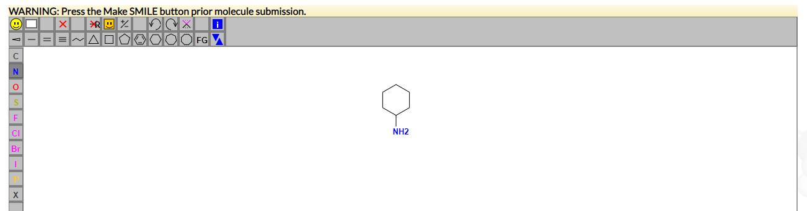
- Now press convert to SMILES
- Leave everything as default and then press submit molecule
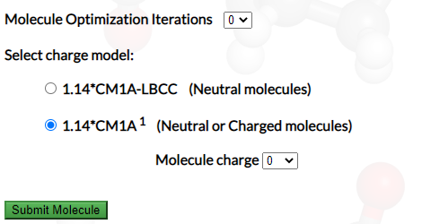
- Now wait for few minutes then download all files as zip 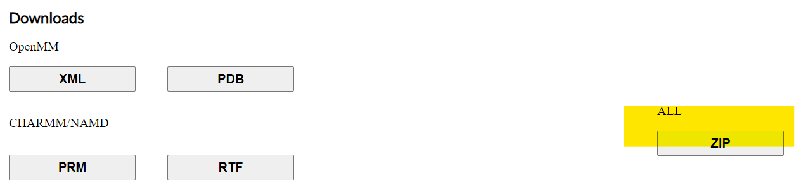
- Now extract files in separate folder 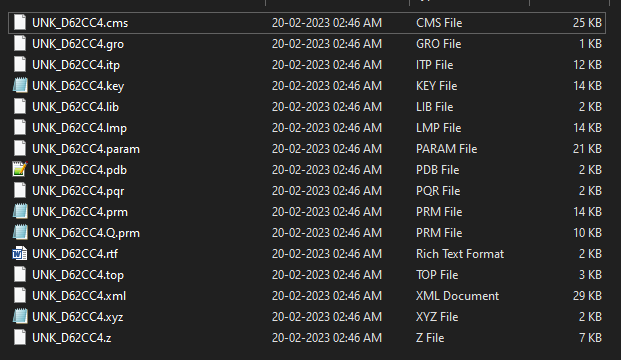
- Now we will convert .pqr format to zmat format using openbabel, go to openbabel online website
- Upload the UNKD62CC4.pqr to the website 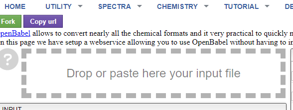
- In option section select input file as pqr format and output file as gzmat 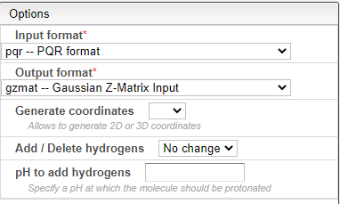
- Make sure you get no error during conversion as shown
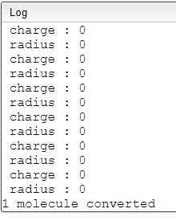
- Now copy the output file contents to a file named moleculename.zmat from N to d20
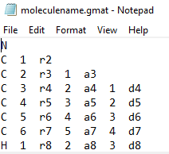
Step 02: require file generation for fftool
- This instructions are for both Linux and windows
- Now go to fftool git repository and download the whole repository as zip
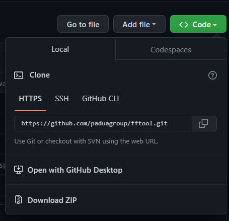
- Extract the content to separate folder 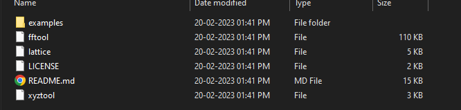
- Here rename fftool to fftool.py do the same with lattice.py and xyztool.py 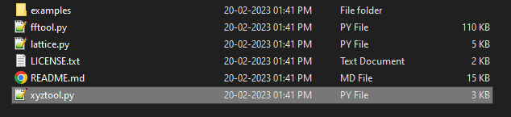
- Now install python3 (find out how to do this on the internet)
- Also download Packmol from github repository only for Linux 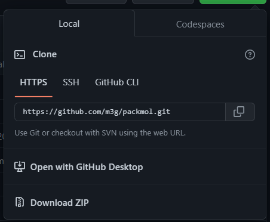
- Extract zip in separate folder and install Packmol as follows
- tar -xvzf packmol-20.13.0.tar.gz
- This will create a directory called packmol inside which you can find the source code. You can build the executable by:
- That's it, if no error was reported the packmol executable was built. Note that 20.13.0 is the version number, which may differ relative to this example.
- If you have problems, let the configure script find a suitable compiler for you:
- chmod +x ./configure (this makes the script executable)
- ./configure (this executes the script)
- If the script was not able to find a suitable compiler, then you can manually set the compiler by:
- ./configure /path/to/your/compiler/yourcompiler
- Then, run the "make" command again:
- If no error was detected, an executable called packmol is now ready.
- If you are using Windows machine directly download the packmol binary or packmol.exe from the link no need to install just place packmol.exe in fftool forder where we are going to use this
- Now at this point we have installed packmol in ubuntu just locate the packmol binaries and copy this to the fftool folder 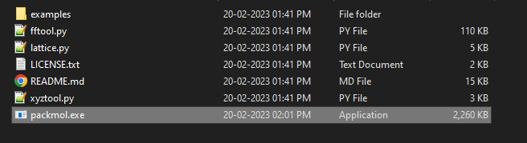
- You can read how to use fftool by opening README.md, and also from example folder lots of molecules are given to generate lammps data file
- Here we are trying to parameterise a new molecule from scratch for that keep following this instructions
- Lets Recap what we have so far: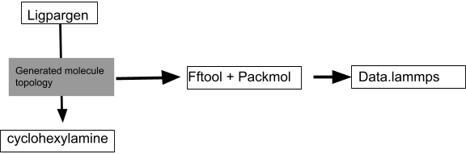
- Now we have to prepare input files for fftool
- First input is a molecule.gmat file (Contains bond length and angle of the molecule)
- Second is forcefield.ff file (contains all the parameters of the bonds, angles,dihedral etc)
- Now open the .key file in any text editor 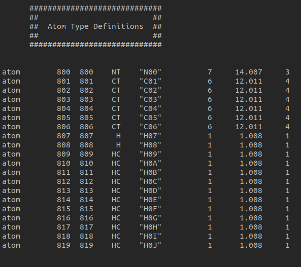
- Also open molecule.gmat and replace each atomic with the name in .key file
- For example replace N as N01, C as C01 C as C02 and so on
- Make a file named cha.ff (.ff extension is mandatory)
- Now download all the files from this github repository and then observe carefully what are the changes has been done using .key format
- Also pay proper attention to the unit used in the .ff file
Step 03: using fftool to generate data file for lammps
- First put all the file necessary for fftool in separate folder 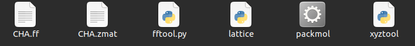
- Open terminal in the same directory type the following command
- python3 fftool.py 100 CHA.zmat -b 60
- Output: density 0.769 mol/L volume 216000.0 A^3
molecule_file species nmol force_field nbond source charge
CHA.zmat CHA 100 CHA.ff 20 file +0.0000
packmol file
pack.inp
- ./packmol <pack.inp
- Output: ################################################################################
Success!
Final objective function value: .15081E-02
Maximum violation of target distance: 0.000000
Maximum violation of the constraints: .00000E+00
--------------------------------------------------------------------------------
Please cite this work if Packmol was useful:
L. Martinez, R. Andrade, E. G. Birgin, J. M. Martinez,
PACKMOL: A package for building initial configurations for
molecular dynamics simulations.
Journal of Computational Chemistry, 30:2157-2164,2009.
##########################################################
Running time: 6.56569973E-02 seconds.
- Finally to convert simbox to lammps data file type:
- python3 fftool.py 100 CHA.zmat -b 60 -l
Output: density 0.769 mol/L volume 216000.0 A^3
molecule_file species nmol force_field nbond source charge
CHA.zmat CHA 100 CHA.ff 20 file +0.0000
lammps files units real
in.lmp
data.lmp
- If everything run without any error then your folder will look like this 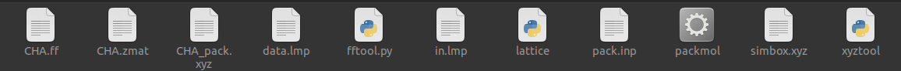
Congratulations now you have successfully created lammps data file in the next section we will learn how to write input script for lammps